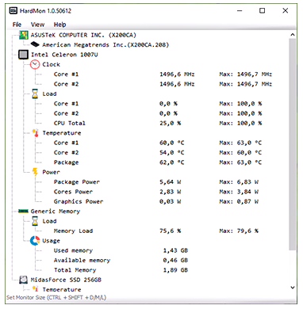

About HardMon
HardMon is a utility to monitor CPU, GPU, RAM, and HDD performance and temperature with intuitive, lightweight reports.
It supports Intel, AMD, Nvidia, ATI hardware monitoring and S.M.A.R.T. data for drives. Also shows RAM usage and allows light/dark themes with zoom options.
Keyboard shortcuts: CTRL+L (Light), CTRL+D (Dark), CTRL+SHIFT+D (Original), CTRL+SHIFT+M (Medium), CTRL+SHIFT+L (Large). Compatible with Windows Vista/7/8/8.1/10 and newer.
| HardMon 1.0.50612 | |
| Windows Vista/7 | Download |
| Windows 8/8.1/10 | Download |